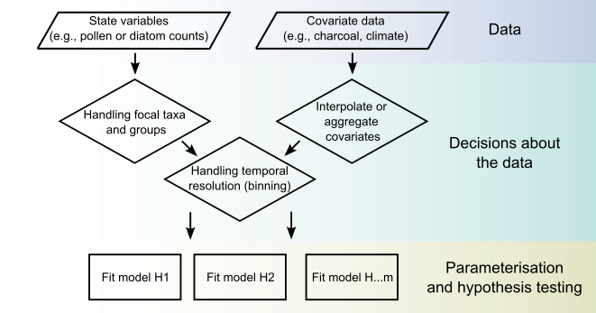

multinomialTS
Count data, or multinomially distributed data, are a common form of ecological data (but are not exclusive to ecology). Count data carry the issue of relative abundances, where the true abundance of a taxon, or species, is not known, and only their relative proportions are known. Additionally, ecological time-series are often irregularly spaced in time, which violates assumptions of many time-series models. multinomialTS is designed to model count data directly and provide estimates of driver-taxa relationships and taxa-taxa interactions, and also account for unevenly spaced time-intervals.
Documentation Read the paper Source on GitHub
How it works
A full description of the model is in the main paper (Asena et al., 2026), including the mathematics from Tony Ives. Tony is the mathematician behind the model, Jack Williams is the palaeoecological expert, and my part was largely co-developing the model framework, writing the code base, and implementing model test simulations and fitting empirical data. I also maintain the package and write and deliver the workshop materials.
In brief, state-space modelling attempts to predict the ‘true’ unobservable state of a system from underlying ecological processes and observations from the system. In a palaeoecological context, the ‘true’ state is the relative abundance of each taxon in a community, and the observations are the counts of each taxon in a sample. The model estimates how environmental drivers (or covariates) relate to each taxon, and how taxa interact, directly from count data such as fossil pollen.

multinomialTS workflow: preparing state variables and covariates, the decisions to make about grouping taxa, interpolating covariates and choosing a prediction resolution, then fitting and comparing competing hypotheses.Install
The model is not on CRAN yet. Until it is, it can be installed from GitHub:
# install.packages("devtools")
devtools::install_github("https://github.com/QuinnAsena/multinomialTS")The package has compiled C++ code, so building from source needs Rtools on Windows or xcode-select --install on macOS. If you would rather not compile, pre-built binaries for Windows, Intel macOS and Apple silicon are on the releases page.
Learn it
The package includes two vignettes:
And a more extensive walkthrough (not restricted by the vignette format) is here:
The paper
Asena, Q., Williams, J., Johnson, J., Shuman, B., Stefanova, V., Ives, A. (2026). Statistical analyses of ecological multinomial time series to identify environmental drivers and biotic interactions. Methods in Ecology and Evolution.
There is also a Methods blog post for a more informal discussion of the method.
The model was developed during my postdoc at UW–Madison with Tony Ives and Jack Williams.
Watch the talk
Here is a talk that accompanied the publication of the paper.
I have also presented this work at ESA in 2023, 2024 and 2025. Those slides are on the Talks page.
How to cite
Cite the paper above for the method. For the software itself, citation("multinomialTS") in R gives the current version, and the citation page has it too.
Released under the MIT licence. Issues and contributions are welcome on GitHub.